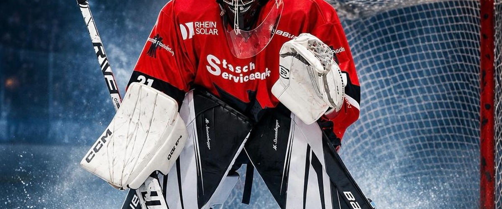

🥅 GoalieStats Live Offline bereit*
Rebound oder Breakaway vor dem Schuss markieren. Bei „Tor Gegner“ wird der Schuss automatisch mitgezählt.
Torwartwechsel und Spielzeit
Beim Wechsel: erst Spielminute eintragen, dann oben unter „Im Tor“ den neuen Torwart wählen. Die Einsatzzeit wird dem bisherigen Torwart zugerechnet. Spielzeit muss manuell erfasst werden.
Drittel · Rebounds · Breakaways
Spiel abschließen · Saison · Sicherung
Spielabschluss speichert das Spiel im Saisonarchiv und startet ein leeres Spiel. Daten liegen nur auf diesem Gerät. Regelmäßig JSON sichern!
Installation · Datenschutz
iPhone/iPad: veröffentlichte HTTPS-Adresse in Safari öffnen → Teilen → „Zum Home-Bildschirm“. Erst nach dem ersten Online-Aufruf und erfolgreicher Offline-Prüfung ohne Internet nutzen. Keine Anmeldung, keine Tracker, keine Übertragung der Spielstatistiken an einen Server. Bei Löschen der Browserdaten können die Daten verloren gehen.